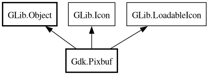

Pixbuf
Object Hierarchy:

Description:
[
CCode ( type_id =
"gdk_pixbuf_get_type ()" ) ]
public class Pixbuf :
Object,
Icon,
LoadableIcon
Content:
Properties:
Static methods:
- public static int calculate_rowstride (Colorspace colorspace, bool has_alpha, int bits_per_sample, int width, int height)
- public static Pixbuf from_pixdata (Pixdata pixdata, bool copy_pixels = true) throws Error
- public static unowned PixbufFormat? get_file_info (string filename, out int width, out int height)
- public static async unowned PixbufFormat? get_file_info_async (string filename, Cancellable? cancellable, out int width, out int height) throws Error
- public static SList<unowned PixbufFormat> get_formats ()
- public static bool init_modules (string path) throws Error
Creation methods:
- public Pixbuf (Colorspace colorspace, bool has_alpha, int bits_per_sample, int width, int height)
- public Pixbuf.from_bytes (Bytes data, Colorspace colorspace, bool has_alpha, int bits_per_sample, int width, int height, int rowstride)
- public Pixbuf.from_data (owned uint8[] data, Colorspace colorspace, bool has_alpha, int bits_per_sample, int width, int height, int rowstride, PixbufDestroyNotify? destroy_fn = free)
- public Pixbuf.from_file (string filename) throws Error
- public Pixbuf.from_file_at_scale (string filename, int width, int height, bool preserve_aspect_ratio) throws Error
- public Pixbuf.from_file_at_size (string filename, int width, int height) throws Error
- public Pixbuf.from_inline (uint8[] data, bool copy_pixels = true) throws Error
- public Pixbuf.from_resource (string resource_path) throws Error
- public Pixbuf.from_resource_at_scale (string resource_path, int width, int height, bool preserve_aspect_ratio) throws Error
- public Pixbuf.from_stream (InputStream stream, Cancellable? cancellable = null) throws Error
- public async Pixbuf.from_stream_async (InputStream stream, Cancellable? cancellable = null) throws Error
- public Pixbuf.from_stream_at_scale (InputStream stream, int width, int height, bool preserve_aspect_ratio, Cancellable? cancellable = null) throws Error
- public async Pixbuf.from_stream_at_scale_async (InputStream stream, int width, int height, bool preserve_aspect_ratio, Cancellable? cancellable = null) throws Error
- public Pixbuf.from_xpm_data (string[] data)
- public Pixbuf.subpixbuf (Pixbuf src_pixbuf, int src_x, int src_y, int width, int height)
- public Pixbuf.with_unowned_data (uint8[] data, Colorspace colorspace, bool has_alpha, int bits_per_sample, int width, int height, int rowstride, PixbufDestroyNotify? destroy_fn = null)
Methods:
- public Pixbuf add_alpha (bool substitute_color, uint8 r, uint8 g, uint8 b)
- public Pixbuf? apply_embedded_orientation ()
- public void composite (Pixbuf dest, int dest_x, int dest_y, int dest_width, int dest_height, double offset_x, double offset_y, double scale_x, double scale_y, InterpType interp_type, int overall_alpha)
- public void composite_color (Pixbuf dest, int dest_x, int dest_y, int dest_width, int dest_height, double offset_x, double offset_y, double scale_x, double scale_y, InterpType interp_type, int overall_alpha, int check_x, int check_y, int check_size, uint32 color1, uint32 color2)
- public Pixbuf? composite_color_simple (int dest_width, int dest_height, InterpType interp_type, int overall_alpha, int check_size, uint32 color1, uint32 color2)
- public Pixbuf? copy ()
- public void copy_area (int src_x, int src_y, int width, int height, Pixbuf dest_pixbuf, int dest_x, int dest_y)
- public bool copy_options (Pixbuf dest_pixbuf)
- public void fill (uint32 pixel)
- public Pixbuf? flip (bool horizontal)
- public int get_bits_per_sample ()
- public size_t get_byte_length ()
- public Colorspace get_colorspace ()
- public bool get_has_alpha ()
- public int get_height ()
- public int get_n_channels ()
- public unowned string? get_option (string key)
- public HashTable<unowned string,unowned string> get_options ()
- public unowned uint8[] get_pixels ()
- public unowned uint8[] get_pixels_with_length ()
- public int get_rowstride ()
- public int get_width ()
- public Bytes read_pixel_bytes ()
- public uint8 read_pixels ()
- public bool remove_option (string key)
- public Pixbuf? rotate_simple (PixbufRotation angle)
- public void saturate_and_pixelate (Pixbuf dest, float saturation, bool pixelate)
- public bool save (string filename, string type, ...) throws Error
- public bool save_to_buffer (out uint8[] buffer, string type, ...) throws Error
- public bool save_to_bufferv (out uint8[] buffer, string type, string[]? option_keys, string[]? option_values) throws Error
- public bool save_to_callback (PixbufSaveFunc save_func, string type, ...) throws Error
- public bool save_to_callbackv (PixbufSaveFunc save_func, string type, string[]? option_keys, string[]? option_values) throws Error
- public bool save_to_stream (OutputStream stream, string type, Cancellable? cancellable = null, ...) throws Error
- public async void save_to_stream_async (OutputStream stream, string type, Cancellable? cancellable = null, ...) throws Error
- public bool save_to_streamv (OutputStream stream, string type, string[]? option_keys, string[]? option_values, Cancellable? cancellable = null) throws Error
- public async void save_to_streamv_async (OutputStream stream, string type, string[]? option_keys, string[]? option_values, Cancellable? cancellable = null) throws Error
- public bool savev (string filename, string type, string[]? option_keys, string[]? option_values) throws Error
- public void scale (Pixbuf dest, int dest_x, int dest_y, int dest_width, int dest_height, double offset_x, double offset_y, double scale_x, double scale_y, InterpType interp_type)
- public Pixbuf? scale_simple (int dest_width, int dest_height, InterpType interp_type)
- public bool set_option (string key, string value)
Inherited Members:
All known members inherited from class GLib.Object
All known members inherited from interface GLib.Icon
All known members inherited from interface GLib.LoadableIcon